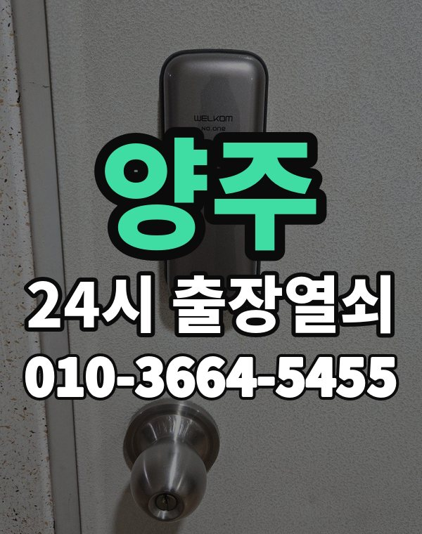

양주 출장 다니며 보는 동네
양주는 옥정 신도시 아파트와 고읍, 백석, 장흥 쪽 주택과 전원주택이 함께 있는 지역입니다.
옥정은 새 아파트라 밀고 당기는 형 도어락이 대부분입니다.

양주시 출장 가는 동네
- 옥정동
- 고읍동
- 삼숭동
- 백석읍
- 광적면
- 장흥면
- 남면
옥정동 출장열쇠, 고읍동 열쇠집처럼 동네 이름으로 찾으셨어도 같은 곳입니다.
적혀 있지 않은 동네도 양주시 안이면 다 갑니다.
양주에서 하는 일
양주에서 전화 주실 때
장흥, 광적 쪽은 거리가 있어 도착 시간을 먼저 말씀드립니다.
전원주택 대문도 출동합니다.
양주역, 덕정역, 옥정 근처라고 말씀해 주셔도 위치 잡기가 쉬워집니다.
가까운 역이나 큰 건물, 단지 이름을 같이 알려주세요.
- 도로명 주소나 건물 이름
- 도어락 사진 한 장 (문자로)
- 신분증, 우편물 등 사시는 걸 확인할 것
전화부터 작업까지 순서는 이용안내에 적어 두었습니다.
양주 출장열쇠 관련 글
- 양주 백석읍 부모님 댁 도어락 점검과 어르신이 쓰기 편한 설정 가이드
- 양주 백석읍 주택 현관 방범, 과하지 않게 챙기는 요령
- 양주 고읍동 주택에서 아이나 강아지만 남겨 둔 채 문이 잠겼을 때 첫 10분 행동 순서
- 양주 고읍동 현관문 쿵 소리·삐걱임·뻑뻑함 원인과 출장열쇠 점검 순서
- 양주 광적면 한파에 도어락이 느리거나 꺼질 때 배터리 점검과 출장열쇠
- 양주 광적면 새벽에 문이 안 열릴 때 전화 거는 요령
- 양주 장흥면 펜션·세컨드하우스 현관 열쇠 분실과 도어락 먹통 출장열쇠 안내
- 양주 장흥면 상가·사무실 출입문 도어락 잠김 해결 안내
- 양주 남면 시골집 오래된 자물쇠와 대문 열쇠가 안 맞을 때 출장열쇠 점검
- 양주 남면 주택 문 연 다음 꼭 해둘 점검과 재발 막는 법
- 양주 옥정동 택배 받으러, 분리수거하러 잠깐 나왔다가 현관이 잠겼을 때 차분히 할 일
- 양주 옥정동 도어락 알림이 안 오고 앱 연동이 끊길 때 확인할 것과 출장열쇠
- 양주 삼숭동 베란다·미닫이문 잠금장치가 안 잠기거나 안 열릴 때 출장열쇠 점검
- 양주 삼숭동 도어락 바꾸기 전에 짚어 볼 다섯 가지와 비용 안내를 받는 순서
양주 출장열쇠 자주 묻는 질문
양주 어디까지 출장 오시나요?
옥정동, 고읍동, 삼숭동, 백석읍, 광적면, 장흥면 등 양주시 전 지역 갑니다. 목록에 없는 동네도 전화로 위치만 알려주시면 됩니다.
양주에서 밤늦게나 새벽에도 오시나요?
밤이든 새벽이든 받습니다. 어디인지 들으면 언제쯤 도착하는지 바로 말씀드립니다.
개방에 실패해도 비용이 나오나요?
못 열면 비용은 받지 않습니다. 비용은 작업 전에 먼저 말씀드리고, 괜찮다고 하시면 시작합니다.
본인 확인은 어떻게 하나요?
사시는 분인지 신분증, 주소가 나온 우편물, 관리사무소 확인 중 하나로 확인한 뒤 엽니다.
양주 도어락 새로 다는 것도 되나요?
네, 문 열기와 함께 도어락 수리, 설치, 교체도 합니다. 고쳐서 되면 교체는 권하지 않습니다.